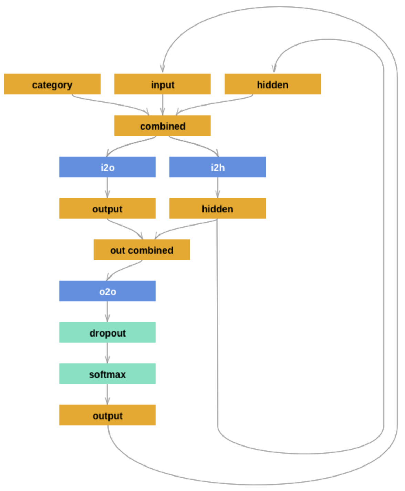

Sheet 2.4: Character-level sequence modeling w/ RNNs#
Author: Michael Franke
The goal of this tutorial is to get familiar with simple language models. To be able to have a manageable (quick to train, evaluate, inspect) case study, we look at character-level predictions of surnames from different languages. (The inspiration and source of this notebook is this tutorial from PyTorch’s documentation.)
Packages & global parameters#
In addition to the usual packages for neural network modeling, we will also require packages for I/O and string handling.
##################################################
## import packages
##################################################
from __future__ import unicode_literals, print_function, division
import json
import pandas
import string
import torch
import urllib.request
import numpy as np
import torch.nn as nn
import random
import time
import math
import matplotlib.pyplot as plt
import warnings
warnings.filterwarnings("ignore")
Loading & inspecting the data#
Our training data are lists of surnames from different countries. We will use this data set to train a model that predicts a name, given the country as a prompt.
The (pre-processed) data is stored in a JSON file. We load it and define a few useful variables for later use.
##################################################
## read and inspect the data
##################################################
with urllib.request.urlopen(
"https://raw.githubusercontent.com/michael-franke/npNLG/main/neural_pragmatic_nlg/05-RNNs/names-data.json"
) as url:
names_data = json.load(url)
# # local import
# with open('names-data.json') as dataFile:
# names_data = json.load(dataFile)
categories = list(names_data.keys())
n_categories = len(categories)
# Use all ASCII letters as vocabulary (plus tokens [EOS], [SOS])
all_letters = string.ascii_letters + " .,;'-"
n_letters = len(all_letters) + 2 # all letter + [EOS] and [SOS]
SOSIndex = n_letters - 1
EOSIndex = n_letters - 2
The data consists of two things: a list of strings, called “categories”, contains all the categories (languages) for which we have data; a dictionary, called “names_data”, contains a list of names for each category.
Exercise 2.4.1: Inspect the data
[Just for yourself.] Find out what’s in the data set. How any different countries do we have? How many names per country? Are all names unique in a given country? Do the names sound typical to your ears for the given countries?
Click below to see the solution.
Show code cell content
for c in names_data:
for name in names_data[c]:
if name == "Bruckner":
print("yes")
names_data
# number of countries
print(f"Number of countries: {n_categories}\n")
# number of names per country
for country in names_data:
print(f"{country}: {len(names_data[country])}")
# Unique names per country
for country in names_data:
print(f"{len(names_data[country]) == len(set(names_data[country]))}")
# ---> Most of the name lists contain duplicates.
yes
Number of countries: 18
Czech: 519
German: 724
Arabic: 2000
Japanese: 991
Chinese: 268
Vietnamese: 73
Russian: 9408
French: 277
Irish: 232
English: 3668
Spanish: 298
Greek: 203
Italian: 709
Portuguese: 74
Scottish: 100
Dutch: 297
Korean: 94
Polish: 139
False
False
False
False
False
False
False
False
False
True
False
False
False
True
True
False
True
False
Train-test split#
We will split the data into a training and a test set. Look at the code and try to answer the exercise question of how this split is realized.
##################################################
## make a train/test split
##################################################
train_data = dict()
test_data = dict()
split_percentage = 10
for k in list(names_data.keys()):
total_size = len(names_data[k])
test_size = round(total_size / split_percentage)
train_size = total_size - test_size
print(k, total_size, train_size, test_size)
indices = [i for i in range(total_size)]
random.shuffle(indices)
train_indices = indices[0:train_size]
test_indices = indices[(train_size + 1) : (-1)]
train_data[k] = [names_data[k][i] for i in train_indices]
test_data[k] = [names_data[k][i] for i in test_indices]
Czech 519 467 52
German 724 652 72
Arabic 2000 1800 200
Japanese 991 892 99
Chinese 268 241 27
Vietnamese 73 66 7
Russian 9408 8467 941
French 277 249 28
Irish 232 209 23
English 3668 3301 367
Spanish 298 268 30
Greek 203 183 20
Italian 709 638 71
Portuguese 74 67 7
Scottish 100 90 10
Dutch 297 267 30
Korean 94 85 9
Polish 139 125 14
Exercise 2.4.2: Explain the train-test split
How is the original data information split into training and test set? (E.g., what amount of data is allocated to each part?; is the split exclusive and exhaustive?; how is it determined which item goes where?)
Click below to see the solution.
The dataset is split in training- and testset, where 90% are used for training and 10% for testing. The datapoints are shuffled before assignment and therefore randomly assigned. The split is both exclusive and exhaustive.
Defining the model#
The model we use is a (hand-crafted) recurrent neural network. The architecture follows this tutorial, from where we also borrow the following picture:
{width=550px}
The model makes consecutive predictions about the next character. It is conditioned on three vectors:
’category’ is a one-hot vector encoding the country
’input’ is a one-hot vector encoding the character
’hidden’ is the RNN’s hidden state (remembering what happened before)
These vectors are first combined and then used to produce a next-character probability distribution and the hidden state to be fed into the next round of predictions.
Next to the usual functions (initialization and forward pass), there is also a function that returns a blank ’hidden state’. This will be used later during training and inference, because at the start of each application (training or inference) the RNN should have a blank memory. (It makes sense to include this function in the definition of the module because it depends on the module’s parameters (size of the hidden layer).)
Notice that the architecture features a dropout layer, which randomly sets a fixed proportion of units to 0. The inclusion of dropout introduces a random element in the model during training and inference.
##################################################
## define RNN
##################################################
class RNN(nn.Module):
def __init__(self, input_size, hidden_size, output_size, dropout=0.1):
super(RNN, self).__init__()
self.hidden_size = hidden_size
self.i2h = nn.Linear(n_categories + input_size + hidden_size, hidden_size)
self.i2o = nn.Linear(n_categories + input_size + hidden_size, output_size)
self.o2o = nn.Linear(hidden_size + output_size, output_size)
self.relu = nn.ReLU()
self.dropout = nn.Dropout(dropout)
self.softmax = nn.LogSoftmax(dim=1)
def forward(self, category, input, hidden, dropout):
input_combined = torch.cat((category, input, hidden), 1)
hidden = self.i2h(input_combined)
output = self.i2o(input_combined)
output_combined = torch.cat((hidden, output), 1)
output_combined = self.relu(output_combined)
output = self.o2o(output_combined)
if dropout:
output = self.dropout(output)
output = self.softmax(output)
return output, hidden
def init_hidden(self):
return torch.zeros(1, self.hidden_size)
Exercise 2.4.3: Inspect the model
[Just for yourself.] Make sure that you understand the model architecture and its implementation. E.g., do you agree that this code implements the model graph shown above? Can you think of slight alterations to the model which might also work?
Click below to see the solutions.
The model matches the graph in the picture. Not sure what the expected alternation here is. It could be a good idea to limit the dropout layer to training and deactivate for inference. We would have to add an additional parameter to the forward pass as shown above.
Another idea would be to add a non-linear activation function between the combined output layer and the final output layer. This seems to improve training quiet a bit.
Helper functions for training#
For training, we will present the model with randomly sampled single items. This is why we define a ’random_training_pair’ function which returns, well, a random training pair (category and name).
##################################################
## helper functions for training
##################################################
# Random item from a list
def random_choice(l):
return l[random.randint(0, len(l) - 1)]
# Get a random category and random line from that category
def random_training_pair():
category = random_choice(categories)
line = random_choice(train_data[category])
return category, line
We also need to make sure that the training and test data are in a format that the model understands. So, this is where we use vector representations for the categories and sequences of characters. For sequences of characters we distinguish those used as input to the model (’input_tensor’) and those used in training as what needs to be predicted (’target_tensor’).
# One-hot vector for category
def category_tensor(category):
li = categories.index(category)
tensor = torch.zeros(1, n_categories)
tensor[0][li] = 1
return tensor
# One-hot matrix of first to last letters (not including [EOS]) for input
# The first input is always [SOS]
def input_tensor(line):
tensor = torch.zeros(len(line) + 1, 1, n_letters)
tensor[0][0][SOSIndex] = 1
for li in range(len(line)):
letter = line[li]
tensor[li + 1][0][all_letters.find(letter)] = 1
return tensor
def target_tensor(line):
letter_indexes = [all_letters.find(line[li]) for li in range(len(line))]
letter_indexes.append(EOSIndex)
return torch.LongTensor(letter_indexes)
Finally, we construct a function that returns a random training pair in the proper vectorized format.
# Make category, input, and target tensors from a random category, line pair
def random_training_example():
category, line = random_training_pair()
category_tensor_ = category_tensor(category)
input_line_tensor = input_tensor(line)
target_line_tensor = target_tensor(line)
return category_tensor_, input_line_tensor, target_line_tensor
Exercise 2.4.4: Understand the representational format
Write a doc-string for the function ’random_training_example’ that is short but completely explanatory regarding the format and meaning of its output.
Click below to see the solution.
Show code cell content
# Make category, input, and target tensors from a random category, line pair
def random_training_example():
"""
create a random training example from dataset.
:return:
category_tensor_: A tensor of shape (1X18) with a one at the index of the current country and zeros elsewhere
input_line_tensor: A tensor of shape (length current name x 1 x 60). There is one tensor for each character of
the name with a one at the index of the current character and zeros elsewhere.
target_line_tensor: A tensor of length equal to the number of characters in the name indicating the indices
of the characters in the vocabulary. (gold label)
"""
category, line = random_training_pair()
category_tensor_ = category_tensor(category)
input_line_tensor = input_tensor(line)
target_line_tensor = target_tensor(line)
return category_tensor_, input_line_tensor, target_line_tensor
We use this timing function to keep track of training time:
def time_since(since):
now = time.time()
s = now - since
m = math.floor(s / 60)
s -= m * 60
return "%dm %ds" % (m, s)
Training the network#
This function captures a single training step for one training triplet (category, input representation of the name, output representation of the string).
What is important to note here is that at the start of each “name”, so to speak, we need to supply a fresh ’hidden layer’, but that subsequent calls to the RNN’s forward pass function will use the hidden layer that is returned from the previous forward pass.
##################################################
## single training pass
##################################################
def train(category_tensor, input_line_tensor, target_line_tensor):
# reshape target tensor
target_line_tensor.unsqueeze_(-1)
# get a fresh hidden layer
hidden = rnn.init_hidden()
# reset cumulative loss
optimizer.zero_grad()
loss = 0
# zero the gradients
# sequentially probe predictions and collect loss
for i in range(input_line_tensor.size(0)):
output, hidden = rnn(category_tensor, input_line_tensor[i], hidden, True)
l = criterion(output, target_line_tensor[i])
loss += l
# perform backward pass
loss.backward()
# perform optimization
optimizer.step()
# return prediction and loss
return loss.item() # / input_line_tensor.size(0)
The actual training process is furthermore not very special.
##################################################
## actual training loop
## (should take about 2-4 minutes)
##################################################
# instantiate the model
rnn = RNN(n_letters, 128, n_letters)
# training objective
criterion = nn.NLLLoss()
# learning rate
learning_rate = 0.0005
# optimizer
optimizer = torch.optim.Adam(rnn.parameters(), lr=learning_rate)
# training parameters
n_iters = 100000
print_every = 5000
plot_every = 500
all_losses = []
total_loss = 0 # will be reset every 'plot_every' iterations
start = time.time()
for iter in range(1, n_iters + 1):
loss = train(*random_training_example())
total_loss += loss
if iter % plot_every == 0:
all_losses.append(total_loss / plot_every)
total_loss = 0
if iter % print_every == 0:
rolling_mean = np.mean(all_losses[iter - print_every * (iter // print_every) :])
print(
"%s (%d %d%%) %.4f"
% (time_since(start), iter, iter / n_iters * 100, rolling_mean)
)
0m 18s (5000 5%) 19.8029
0m 36s (10000 10%) 18.7308
0m 54s (15000 15%) 18.1777
1m 13s (20000 20%) 17.7180
1m 32s (25000 25%) 17.3607
1m 49s (30000 30%) 17.0758
2m 7s (35000 35%) 16.8325
2m 25s (40000 40%) 16.6393
2m 43s (45000 45%) 16.4591
3m 0s (50000 50%) 16.2746
3m 16s (55000 55%) 16.1081
3m 33s (60000 60%) 15.9675
3m 50s (65000 65%) 15.8344
4m 7s (70000 70%) 15.7046
4m 24s (75000 75%) 15.5894
4m 41s (80000 80%) 15.4826
4m 58s (85000 85%) 15.3850
5m 15s (90000 90%) 15.2958
5m 32s (95000 95%) 15.2122
5m 49s (100000 100%) 15.1304
Here is a plot of the temporal development of the model’s performance during training:
##################################################
## monitoring loss function during training
##################################################
plt.figure()
plt.plot(all_losses)
plt.show()
Exercise 2.4.5: Investigate the training regime
What exactly is the loss function here? What are we training the model on: perplexity, average surprisal, or yet something else?
Click below to see the solution.
We have the loss function defined as the negative log likelihood loss, which is basically average surprisal. Especially since nn.NLLLoss has a parameter “reduction” which is set to “mean” by default.
Evaluation & inference#
Let’s see what the model has learned and how well it does in producing new names.
Here are some auxiliary functions to obtain surprisal values and related notions for sequences of characters. We can use them to compare the model’s performance on the training and test data set.
##################################################
## evaluation
##################################################
def get_surprisal_item(category, name):
category_tensor_ = category_tensor(category)
input_line_tensor = input_tensor(name)
target_line_tensor = target_tensor(name)
hidden = rnn.init_hidden()
surprisal = 0
target_line_tensor.unsqueeze_(-1)
for i in range(input_line_tensor.size(0)):
output, hidden = rnn(category_tensor_, input_line_tensor[i], hidden, False)
surprisal += criterion(output, target_line_tensor[i])
return surprisal.item()
def get_surprisal_dataset(data):
surprisl_dict = dict()
surp_avg_dict = dict()
perplxty_dict = dict()
for category in list(data.keys()):
surprisl = 0
surp_avg = 0
perplxty = 0
# training
for name in data[category]:
item_surpr = get_surprisal_item(category, name)
surprisl += item_surpr
surp_avg += item_surpr / len(name)
perplxty += item_surpr ** (-1 / len(name))
n_items = len(data[category])
surprisl_dict[category] = surprisl / n_items
surp_avg_dict[category] = surp_avg / n_items
perplxty_dict[category] = perplxty / n_items
return (surprisl_dict, surp_avg_dict, perplxty_dict)
def make_df(surp_dict):
p = pandas.DataFrame.from_dict(surp_dict)
p = p.transpose()
p.columns = ["surprisal", "surp_scaled", "perplexity"]
return p
surprisal_test = make_df(get_surprisal_dataset(test_data))
surprisal_train = make_df(get_surprisal_dataset(train_data))
print("\nmean surprisal (test):", np.mean(surprisal_test["surprisal"]))
print("\nmean surprisal (train):", np.mean(surprisal_train["surprisal"]))
mean surprisal (test): 15.743693795963553
mean surprisal (train): 11.90373899401307
Exercise 2.4.6: Interpret the evaluation metric
What do these two last numbers represent? What’s better: a higher or lower value? What do the two numbers tell us when we compare them?
Click below to see the solution.
These two values answer the question, how surprised the model is seeing the data. A higher value indicates more surprisal. We can see that the model is more surprised seeing the test set, which makes sense because it was trained on the train set while it has never seen the test set before.
Inference#
Let’s also explore the trained model’s predictions to compare them against our own intuitions of what might be typical names in a given country.
Here’s a function that takes a country and an initial string, and it outputs a model prediction for how to continue that string.
Note that for each prediction step with the model, the model is embedded under torch.no_grad(). This setting means that gradients are not computed during the forward passes through the model. This setting is recommended for inference (for any neural net), i.e., when you don’t want to train the model anymore (only use it for generating predictions). This allows to increase computational effiency and save memory.
##################################################
## prediction function
##################################################
max_length = 20
# make a prediction based on given sequence
def predict(category, initial_sequence):
if len(initial_sequence) >= max_length:
return initial_sequence
category_tensor_ = category_tensor(category)
input_line_tensor = input_tensor(initial_sequence)
hidden = rnn.init_hidden()
name = initial_sequence
for i in range(input_line_tensor.size(0)):
with torch.no_grad():
output, hidden = rnn(category_tensor_, input_line_tensor[i], hidden, False)
# greedy decoding: choosing the most likely guess
topv, topi = output.topk(1)
topi = topi[0][0]
if topi == EOSIndex:
return name
else:
name += all_letters[topi]
return predict(category, name)
print(predict("German", "Müll"))
print(predict("German", "Müll"))
print(predict("German", "Müll"))
print(predict("German", "Müll"))
Müller
Müller
Müller
Müller
You can also probe the model with an empty string:
print(predict("Japanese", ""))
print(predict("Japanese", ""))
print(predict("Japanese", ""))
print(predict("Japanese", ""))
Shima
Shima
Shima
Shima
Exercise 2.4.7: Explore the model’s predictions
Play around with these prediction functions for a country or several of which you have robust intuitions about how names from that country might sound. Report on one feature that speaks in favor of the model, and one that suggests that the model is not perfect (or seriously flawed).
Is the prediction function as implemented in this subsection stochastic or not?
Click below to see the solution.
The predict() function itself is not stochastic but rather deterministic, because it uses greedy decoding. This means it will always choose the next most likely character. The variance in the completions comes from the dropout layer in the models architecture leaving space for some randomness. Removing that layer during inference (as described above) will always lead to the same completion given the same input.
Inverting the generation model#
The model we have trained here could be consider a speaker model: the model generates language (very limited in scope but still). Additionally, the model can be used to probe how likely a particular name would be (as a generated string) for a particular category/country. So, essentially we get something like \(P_{S}(name \mid category)\) as a speaker likelihood function. For instance, we can do this:
print(get_surprisal_item("German", "Franke"))
print(get_surprisal_item("Arabic", "Franke"))
12.857054710388184
19.908905029296875
Exercise 2.4.8: Category prediction with Bayes rule
Use the model as a speaker likelihood function to compute, via Bayes rule, the probability \(P(category\mid name)\) for the names “Dovesky”, “Jackson” and “Satoshi”. Compare the results against those obtained by the RNN-based classifier reported in this tutorial (all the way at the end).
Click below to see the solution.
Show code cell content
# names_data
n_names = 0
for key in train_data:
n_names += len(train_data[key])
n_categories = len(train_data)
Show code cell content
# function to retrieve conditional probability for (name|country)
def get_prob(country, name):
category_tensor_ = category_tensor(country)
input_line_tensor = input_tensor(name)
target_line_tensor = target_tensor(name)
hidden = rnn.init_hidden()
log_prob = 0
for i in range(input_line_tensor.size(0)):
output, hidden = rnn(category_tensor_, input_line_tensor[i], hidden, False)
output = output.squeeze()
log_prob += output[target_line_tensor[i]].detach().numpy()
return np.exp(log_prob/input_line_tensor.size(0))
# get probability of categories
p_categories = {}
for key in names_data:
p_categories[key] = len(names_data[key])/n_names
# get the conditional probabilities P(name|cat) from model
cond_prob_names = {"Doveski":[], "Jackson":[], "Satoshi":[]}
country2idx = {}
for i, key in enumerate(names_data):
# create mapping from index to country
country2idx[key] = i
for name in cond_prob_names:
prob = get_prob(key, name)
cond_prob_names[name].append(prob)
# calculate probability of name as P(name) = sum(P(name|category) * P(category)) for all categories
p_names = {"Doveski":0, "Jackson":0, "Satoshi":0}
for name in p_names:
for country in names_data:
p_names[name] += cond_prob_names[name][country2idx[country]] * 1/18
# apply bayes law
for name in cond_prob_names:
total = 0
for country in names_data:
# print(f"P({country} | {name}) = {(cond_prob_names[name][country2idx[country]] * p_categories[country]) / p_names[name]}")
print(f"Logspace: P({country} | {name}) = {np.log((cond_prob_names[name][country2idx[country]] * 1/18) / p_names[name])}")
total += (cond_prob_names[name][country2idx[country]] * 1/18) / p_names[name]
print(total)
print("\n------------------------------------------------------------------------\n")
Logspace: P(Czech | Doveski) = -2.329154273345582
Logspace: P(German | Doveski) = -3.049187345280759
Logspace: P(Arabic | Doveski) = -3.044040465112291
Logspace: P(Japanese | Doveski) = -2.5707610099012776
Logspace: P(Chinese | Doveski) = -3.9830674364599212
Logspace: P(Vietnamese | Doveski) = -4.176395016805715
Logspace: P(Russian | Doveski) = -2.557712239995114
Logspace: P(French | Doveski) = -3.26594367422115
Logspace: P(Irish | Doveski) = -3.1344274634863063
Logspace: P(English | Doveski) = -3.089089898243062
Logspace: P(Spanish | Doveski) = -2.989767319373302
Logspace: P(Greek | Doveski) = -2.4374993423367664
Logspace: P(Italian | Doveski) = -2.746094297468178
Logspace: P(Portuguese | Doveski) = -3.2719710113848373
Logspace: P(Scottish | Doveski) = -3.503078942968957
Logspace: P(Dutch | Doveski) = -2.7748951742793246
Logspace: P(Korean | Doveski) = -4.33744430690024
Logspace: P(Polish | Doveski) = -1.9166837202752751
1.0
------------------------------------------------------------------------
Logspace: P(Czech | Jackson) = -2.6531856900705275
Logspace: P(German | Jackson) = -2.6175335252350447
Logspace: P(Arabic | Jackson) = -3.8089478089254367
Logspace: P(Japanese | Jackson) = -3.3889435308678326
Logspace: P(Chinese | Jackson) = -3.6692703950843093
Logspace: P(Vietnamese | Jackson) = -4.384112744200534
Logspace: P(Russian | Jackson) = -2.6612294775126752
Logspace: P(French | Jackson) = -3.262053290805339
Logspace: P(Irish | Jackson) = -2.21096220730527
Logspace: P(English | Jackson) = -2.1701001434279856
Logspace: P(Spanish | Jackson) = -4.137311827640074
Logspace: P(Greek | Jackson) = -3.9253905269010243
Logspace: P(Italian | Jackson) = -3.8398610504968342
Logspace: P(Portuguese | Jackson) = -4.879318062464732
Logspace: P(Scottish | Jackson) = -1.4070479577071051
Logspace: P(Dutch | Jackson) = -2.943814170795518
Logspace: P(Korean | Jackson) = -3.79754031778924
Logspace: P(Polish | Jackson) = -3.0787130945986387
0.9999999999999994
------------------------------------------------------------------------
Logspace: P(Czech | Satoshi) = -2.582685867418279
Logspace: P(German | Satoshi) = -3.205616125930776
Logspace: P(Arabic | Satoshi) = -3.151007538987999
Logspace: P(Japanese | Satoshi) = -1.819255000074138
Logspace: P(Chinese | Satoshi) = -3.5181813091977734
Logspace: P(Vietnamese | Satoshi) = -3.454367770907213
Logspace: P(Russian | Satoshi) = -2.9190526549711127
Logspace: P(French | Satoshi) = -2.945132093597879
Logspace: P(Irish | Satoshi) = -2.83683439539813
Logspace: P(English | Satoshi) = -3.1927830372943777
Logspace: P(Spanish | Satoshi) = -2.975641382951965
Logspace: P(Greek | Satoshi) = -2.726918229927053
Logspace: P(Italian | Satoshi) = -2.1676781420602698
Logspace: P(Portuguese | Satoshi) = -3.0917557944550413
Logspace: P(Scottish | Satoshi) = -3.076368400920858
Logspace: P(Dutch | Satoshi) = -3.444657022227277
Logspace: P(Korean | Satoshi) = -4.716580436309544
Logspace: P(Polish | Satoshi) = -3.033587316144933
1.0
------------------------------------------------------------------------
While the numbers don’t exactly match with the tutorial, the general tendency is the same except for “satoshi”, where our model predicts more correctly japanese as the most likely class as opposed to italian in the tutorial.